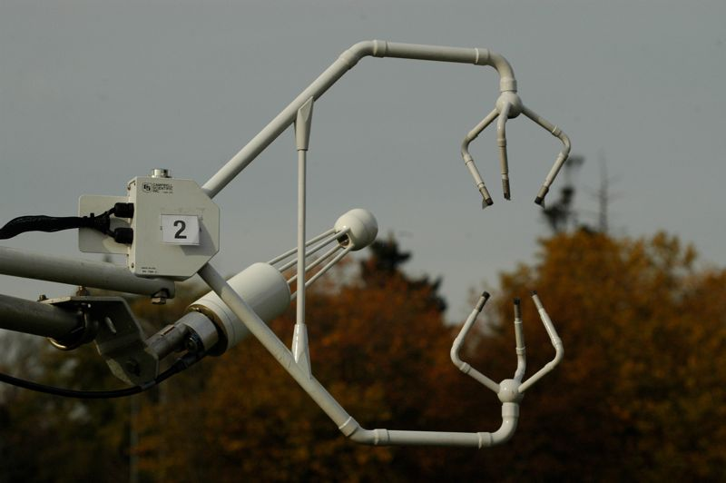

|
|
Front: 3D-Ultrasonic Anemometer (=Sonic Anemometer) |

The ultrasonic anemometer measures turbulence generated by buoyancy and surface shear in the atmosphere. This turbulence transports sensible (QH) and latent heat (QE). However, if wind comes from left to right, what else might affect turbulence in the measurement volume?
Page: 5 of 11 (45%)